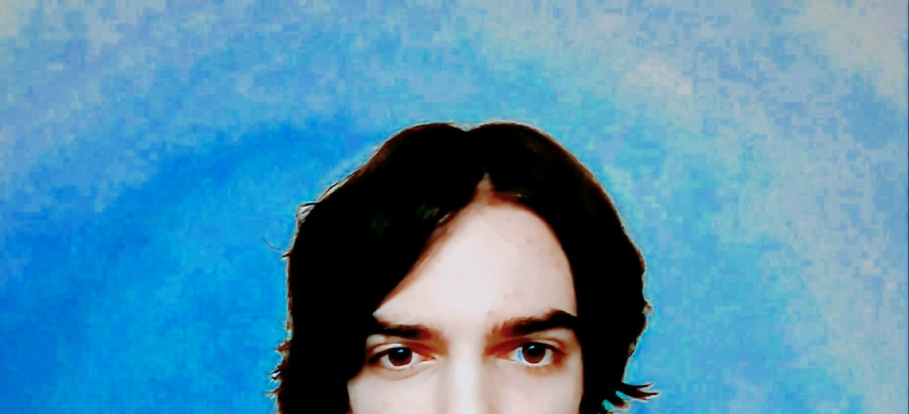

Marcel Sletten - Irish Words and a Bottle of Myrrh

- The second album from Athens, Georgia musician and Primordial Void founder Marcel Sletten.
- Artwork by Susu Laroche.
Track Listing
- Myth (2:28)
- I Miss You (3:09)
- Primordial God (3:24)
- Southern Belle (4:05)
- Ascension (3:31)
- Your Love (2:59)
- Camperdown (2:19)
- Sassafras (5:57)
- Void of Light (6:46)
- Georgia (1:58)
- Baudelaire (2:27)
- Normaltown Blues (6:24)
- Autumn (2:24)
- Distance (2:28)
- No More Beauty (1:49)
- Waxing Crescent (2:09)
Release Date February 25, 2022
Catalog Number PV-23
Format Digital
Recorded over the course of two years, Marcel Sletten’s Irish Words and a Bottle of Myrrh is a sprawling double album that sounds unlike anything the Athens, Georgia artist has ever released. The 16-track collection possesses strong jazz and classical influences, and blends an array of styles ranging from synth funk (“Myth”) to drone metal (“Void of Light”).
"I was listening to a lot of Prince, Stevie Wonder, and Al Green during the recording of Irish Words," Sletten says. "I wanted to make an electronic album that combined the raw energy of soul music with the spirit of piano pieces by composers such as Béla Bartók and Morton Feldman."
Irish Words serves as the follow-up to last year's Vicious Kisses. The album's cover art was designed by London artist Susu Laroche.
